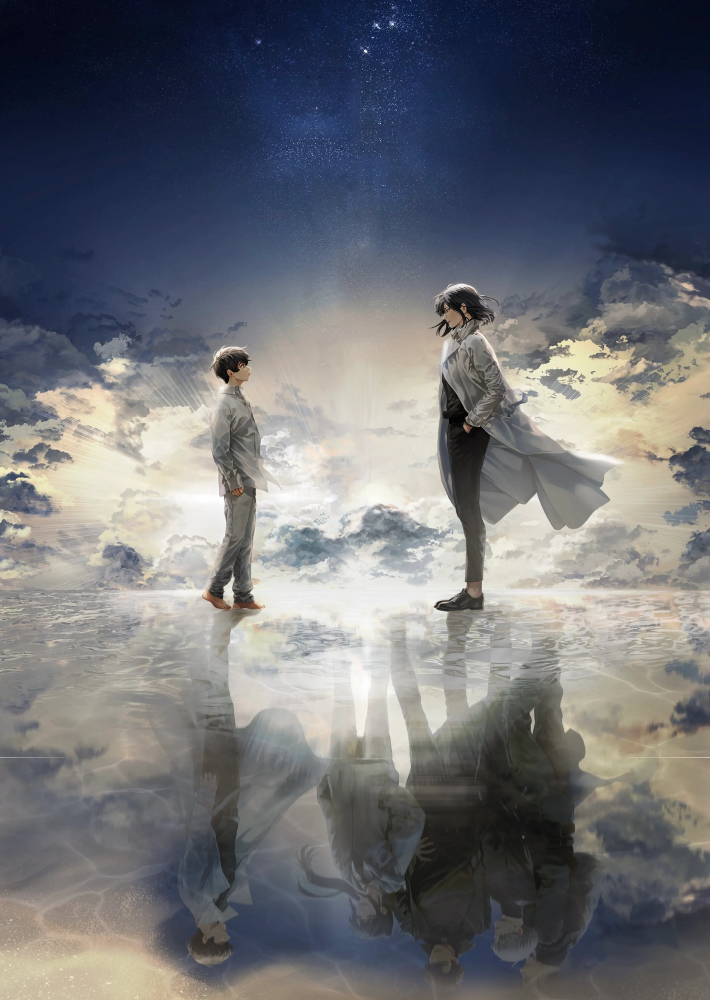
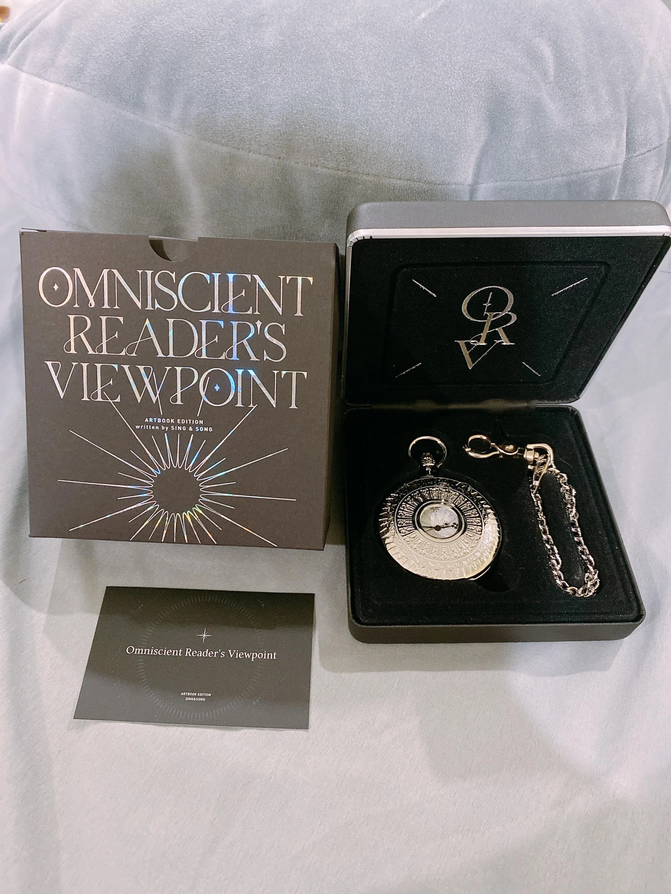
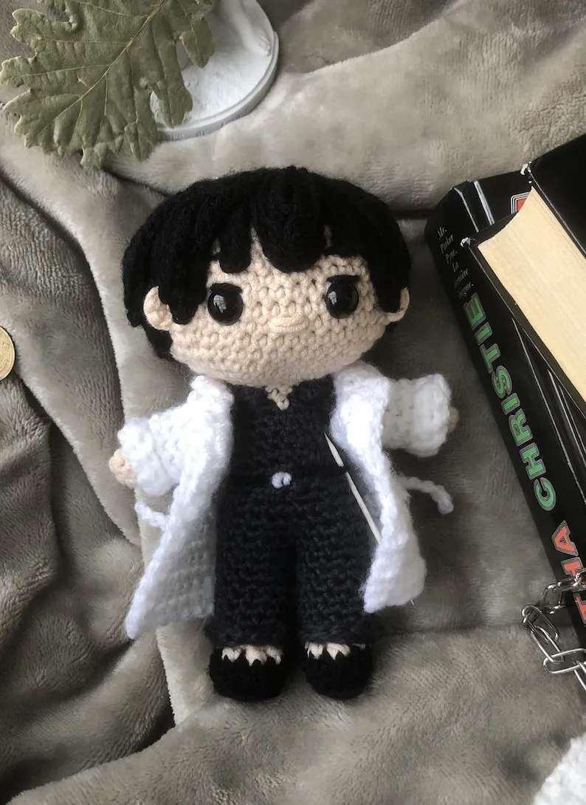

Informacion
Esta es una fanpage de la novela coreana "Omniscient Reader's Viewpoint", o en su nombre en español, "El punto de vista del lector omnisciente" realizada por la pareja de autores Sing Shong. Esta novela cuenta con un webtoon/manhwa, y en esta pagina podra ver productos relacionados a la misma
Todos los productos
Edicion en ingles de "El punto de vista del lector omnisciente"
Edicion en el idioma ingles de la novela
Reloj de bolsillo
reloj de bolsillo de la novela "El punto de vista del lector omnisciente"
Stickers de los personajes de "El punto de vista del lector omnisciente"

Stickers de los personajes de la novela
Peluche de Kim Dokja
Peluche del personaje principal de la novela